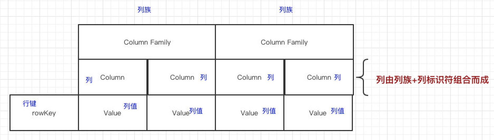
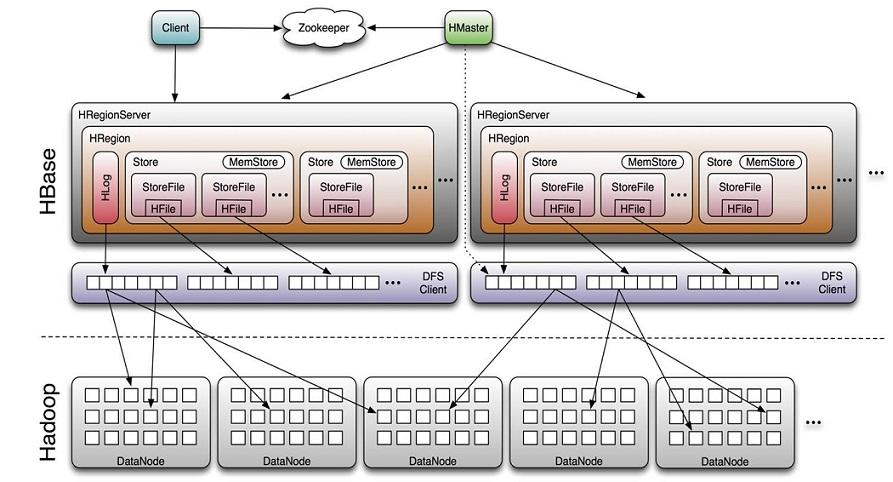
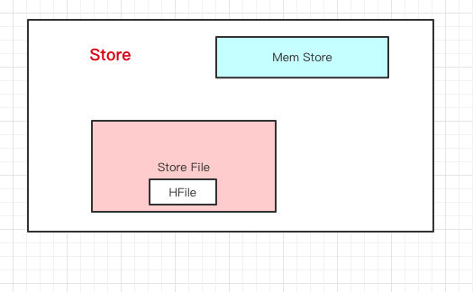

使用过Hive的同学一定都有过这样的感受, 有时候想要进行一个非常简单的查询, 也要耗费不少时间, 在一些需要实时查询的场景是用不上的.
而基于谷歌提出的Bigtable数据模型, 在HDFS的基础上, 出现了Hbase. 这是一个真正的分布式数据库.
Hbase简介
首先, 为什么会有Hbase这样的分布式数据库呢? 很简单, 因为单机的数据库在大数据时代不能胜任所有任务. 一般来说, 像MySQL这样的数据库, 大概可以处理TB级别的数据, 但是有些互联网公司一天的数据量可能就是TB级别.
然后又问, 不是已经有了HDFS以及Hive了吗, 数据量已经不是问题了呀. 因为HDFS和Hive属于文件系统, 或者数据仓库, 而数据库是以某种有组织的方式储存的数据集合. 作为数据库的Hbase的一个很明显的特点就是, 能够高并发地随机写和支持实时查询, 这是HDFS不具备的.
下面来介绍Hbase的架构, Hbase是一种基于Key-Value的NoSQL数据库, 这样设计的好处是, 可以避免数据稀疏带来的储存空间浪费, 同时可以非常方便地对字段进行扩展.
在Hbase里面也有表的概念, 表的结构如下图:

其中的几个关键元素:
列族.
可以理解为列的归类. 在一个列族下可以创建多个列.
列.
就是一般意义上的列, 字段名.
行键.
用于标识一行的标识. 用有相同行键的数据, 属于一行. 需要保证唯一, 且设计合理, 方便加速查询.
上面虽然以类似二维表的形式来展示, 但是Hbase本质是NoSQL, 所以一般来说Key就是”行键-列族-列”, Value就是对应的值.
此外, 还有一个元素是时间戳, 当数据写入Hbase, 更改, 甚至删除的时候, 都会有一个时间戳, 可以当成一个数据的版本. 所以在查询时, 可以根据时间戳查询过去的值.
Hbase整体的结构如下图:

Client.
客户端, 提供Hbase的访问接口.
Zookeeper.
储存Hbase的元数据(meta表), 在读写数据时, 去Zookeeper中拿到meta数据, 告诉客户端去哪台机器读写数据.
HRegion.
在上面介绍表结构时候, 说到了列族, 行键的概念, 而在具体储存时, 会按照行键进行切分, 划分为多个HRegion.
HMaster.
监控HRegionServer的状态, 处理元数据的变更, 处理HRegion的分配或转移. 如当某个HRegion过大时, 自动切分为多个HRegion.
HRegionServer.
真正干活的节点, 负责与HDFS底层交互, 处理客户端请求. 一个HRegionServer中有多个HRegion.
在每个HRegion内部, 有多个按列族划分的Store, 每个Store内, 又有Mem Store和Store File. 其中Mem Store负责在内存接收数据, 当超过一定阈值时, 再刷写到硬盘的Store File上.

还漏了一个Hlog, 这是干嘛用的呢. 其实就是在写数据的时候, 会先写到内存, 但为了防止机器宕机, 内存中的数据没刷到硬盘就挂了, 所以在写Mem Store时还会写一份Hlog, 按顺序快速写到硬盘.
总结一下Hbase的特点:
- 采用Key-Value列式存储, 节约空间.
- 可自动切分数据, 能够水平拓展.
- 可提供高并发, 低延迟的读写操作.
- 不支持丰富的条件筛选查询, 比较依赖行键.
安装
在这里下载, 我选择的是2.3.1版本.
下载完成后, 解压放置到目录/usr/local/hbase.
在Ubuntu操作系统上, .bashrc添加如下内容:
1 | # hbase |
在/usr/local/hbase/conf下的hbase-env.sh文件进行修改, 具体路径根据实际情况改动:
1 | # The java implementation to use. Java 1.8+ required. |
其中HBASE_MANAGES_ZK表示设置由Hbase自己管理Zookeeper, 不需要单独配置.
再配置hbase-site.xml文件:
1 | <property> |
其中hbase.tmp.dir需要与HDFS的地址端口相匹配.
启动Hbase:
1 | 启动Hadoop |
在浏览器上IP:60010可以看到交互界面.
进入Hbase Shell:
1 | hbase shell |
使用help查看帮助, help 'cmd'查看具体命令帮助, exit退出shell.
在关闭时, 也是stop-hbase.sh先关闭Hbase, 再stop-all.sh关闭Hadoop.
使用
命令行
下面列举一些Hbase的常用命令行操作.
表操作.
创建.
1
2
3
4# 创建表, 以及对应的列族
> create 'tb_name', 'col_family_0', 'col_family_0', ...
# 添加列族
> alter 'tb_name', 'col_family'删除.
1
2
3
4
5# 删除列族
> alter 'tb_name', 'delete'=>'col_family'
# 删除表
> disable 'tb_name'
> drop 'tb_name'查看.
1
2
3
4# 显示Hbase中的表
> list
# 查看表结构
> describe 'tb_name'数据操作.
插入/覆盖数据.
1
> put 'tb_name', 'row_key', 'col_family:col', val
获取数据.
1
2
3
4
5
6
7
8
9
10
11
12
13
14# 获取指定行数据
> get 'tb_name', 'row_key'
# 获取指定行, 指定列族数据
> get 'tb_name', 'row_key', 'col_family'
# 获取指定单元格数据
> get 'tb_name', 'row_key', 'col_family:col'
> 获取指定行, 指定多个列族或列的数据
> get 'tb_name', 'row_key', {COLUMN=>['col_family_0:col_0', 'col_family_1', ...]}
# 查看表中所有数据, {FORMATTER => 'toString'}可识别中文
> scan 'tb_name', {FORMATTER => 'toString'}
# 获取指定多个列族或列的数据
> scan 'tb_name', {COLUMN=>['col_family_0:col_0', 'col_family_1', ...]}删除数据.
1
2
3
4
5
6# 指定单元格内容
> delete 'tb_name', 'row_key', 'col_family:col'
# 整行删除
> deleteall 'tb_name', 'row_key'
# 清空数据表
> truncate 'tb_name'
Python接口
如果要对Hbase进行一些复杂的流程处理或者操作, 命令行的方式是比较麻烦的, 其原生的编程接口语言是Java, 不过借助thrift接口服务器, 因此也可以采用其他语言来使用Hbase, 这里使用Python.
在使用Python包之前, 需要启动Hbase的thrift-server:
1 | $ hbase-daemon.sh start thrift |
1 | 34533 ThriftServer |
不止一个Python包可以操作Hbase, 不过个人觉得HappyBase比较好用, 不需要再进行更多的额外配置, 比如安装系统的thrift和对应依赖, 直接连接即可使用.
1 | import happybase |